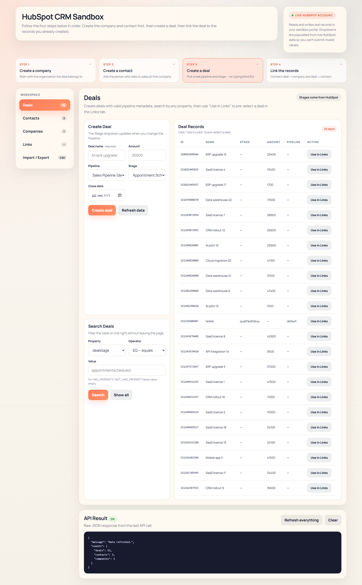
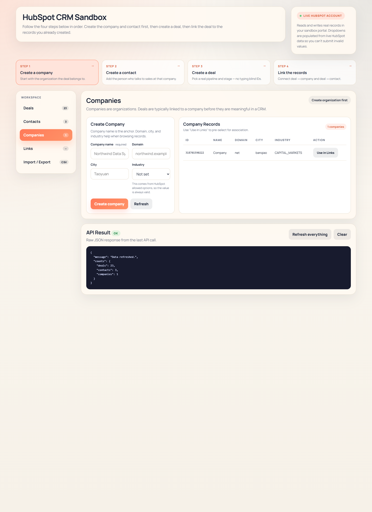
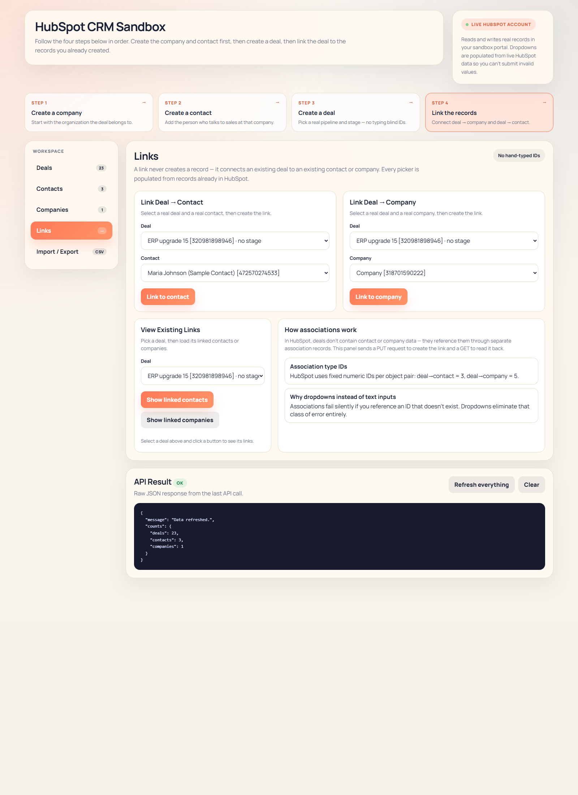
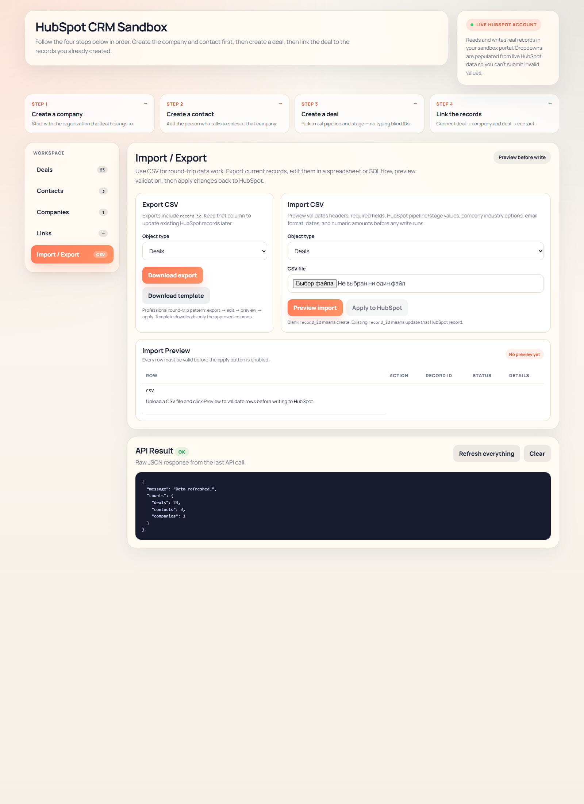

HubSpot CRM Sandbox Demo
HubSpot CRM Sandbox 示範簡報
A lightweight CRM demo built in C# for HubSpot workflows, designed to show object creation,
deal linking, and CSV import/export in a clean interview-ready format.
這是一個以 C# 開發的輕量 CRM 示範系統，用來展示 HubSpot 物件建立、商機關聯，以及 CSV 匯入匯出流程。
Core demo panels
核心展示面板
Main object types
主要物件類型
Live HubSpot sandbox
真實 HubSpot 測試環境

English: The UI reads and writes to a live HubSpot sandbox account, while keeping the workflow compact for demo use.
中文：此介面會讀寫 HubSpot 測試帳號，但仍保持簡潔，方便做示範與說明。
Demo Flow / 示範流程
The demo follows a practical CRM sequence: create the master data first, then create the deal, and finally link all records together.
此示範依照實務 CRM 流程設計：先建立主資料，再建立商機，最後完成關聯。
Deals Panel / 商機管理畫面
The deals screen supports create, search, live list refresh, and result inspection from a single panel.
商機頁面可在同一個面板完成建立、查詢、清單更新與結果檢視。
Live pipeline validation / 即時流程驗證
Pipeline and stage values come from HubSpot, so invalid stage combinations are blocked before submission.
流程與階段選項直接來自 HubSpot，可在送出前避免無效組合。
Searchable deal list / 可查詢的商機清單
The user can filter deals by property and inspect the returned records immediately.
使用者可依欄位條件查詢商機，並立即查看回傳結果。
Result transparency / 結果透明化
The raw API result is shown for demos, debugging, and interview explanation.
系統會顯示原始 API 結果，方便示範、除錯與面試解說。
English: This is the main operational screen for deal creation and search.
中文：這是商機建立與查詢的主要操作畫面。

English: Company creation uses controlled fields such as industry options from HubSpot.
中文：公司建立頁面採用受控欄位，例如 industry 會讀取 HubSpot 的有效選項。
Company and Contact Setup / 公司與聯絡人建立
In CRM practice, clean master data is the foundation for deals, reporting, and downstream integrations.
在 CRM 實務中，乾淨的主資料是商機、報表與後續整合的基礎。
Controlled input / 受控輸入
Dropdowns reduce invalid entries and reflect the live HubSpot schema.
下拉選單可減少錯誤輸入，並直接反映 HubSpot 的實際欄位規則。
Reusable master records / 可重複使用的主資料
Once created, companies and contacts can be reused across multiple deals and links.
公司與聯絡人建立後，可在多筆商機與關聯流程中重複使用。
Closer to integration work / 更接近整合實務
This mirrors how integration engineers prepare CRM entities before deal synchronization.
這也符合整合工程師在同步商機前，先整理 CRM 主資料的實務做法。
Linking Records / 關聯建立
The linking screen demonstrates how a deal becomes meaningful only after it is associated with the correct company and contact.
關聯畫面展示了商機必須與正確的公司與聯絡人綁定後，才真正具備商業意義。
Deal-to-company link / 商機對公司關聯
Shows which organization owns or drives the opportunity.
顯示該商機屬於哪一家公司或由哪個組織推動。
Deal-to-contact link / 商機對聯絡人關聯
Tracks the person involved in communication, negotiation, or approval.
追蹤參與聯繫、談判或核准的人員。
Good demo for CRM logic / 適合展示 CRM 邏輯
This is a useful screen to explain CRM relationships to technical and non-technical viewers.
此畫面很適合向技術與非技術觀眾說明 CRM 關係模型。

English: The links tab binds existing records instead of creating guessed IDs manually.
中文：Links 頁面會讓使用者直接選擇現有資料，而不是手動猜測 ID。

English: CSV import/export is the most integration-oriented part of the demo.
中文：CSV 匯入匯出是這個 demo 中最接近整合工程實務的一部分。
CSV Workflow / CSV 匯入匯出流程
The demo supports template download, export, preview validation, and apply-to-HubSpot in one guided flow.
這個 demo 支援樣板下載、資料匯出、預覽驗證，以及套用到 HubSpot 的完整流程。
Preview before write / 先預覽再寫入
The import preview checks rows before any write operation happens.
匯入預覽會先檢查每一列資料，再決定是否進行寫入。
Round-trip pattern / Round-trip 模式
Users can export records, edit the CSV, preview changes, and then apply them back to HubSpot.
使用者可先匯出資料，再編輯 CSV，之後預覽並回寫到 HubSpot。
Integration-oriented design / 面向整合的設計
This is the part that best matches CRM/ERP integration interview requirements.
這部分最能對應 CRM/ERP 整合相關職缺的面試需求。
Technical Architecture / 技術架構
The current demo is intentionally lightweight, but it already shows a practical separation between UI, API endpoints, validation logic, and HubSpot integration.
目前版本刻意保持輕量，但已具備 UI、API、驗證邏輯與 HubSpot 整合層之間的基本分工。
Current scope / 目前範圍
Live CRM demo, object creation, associations, CSV preview/apply.
真實 CRM 示範、物件建立、關聯、CSV 預覽與套用。
Professional next step / 下一步專業化方向
Add SQL staging, import history, row-level errors, and audit tracking.
加入 SQL 暫存層、匯入歷史、逐列錯誤與稽核紀錄。
Interview value / 面試價值
The demo already shows CRM thinking, API usage, data validation, and integration flow design.
此 demo 已能展示 CRM 思維、API 使用、資料驗證與整合流程設計。